NEP-AI Programme · 18 August 2026
Scaling AI Systems & Infrastructure Constraints
Dr. Nils Lukas
Assistant Professor of Machine Learning, MBZUAI
Opening · Abu Dhabi
The largest AI construction site outside America.
Stargate UAE · first 200 MW
This quarter
First phase completes roughly now — the opening slice of a 1 GW, >$30B cluster inside a planned 5 GW UAE–US campus. 9× the size of Monaco · 5,000+ workers · the steel of 1.5 Eiffel Towers.
G42/Khazna building; OpenAI, Oracle, NVIDIA, Cisco, SoftBank inside. First country in OpenAI's "OpenAI for Countries".
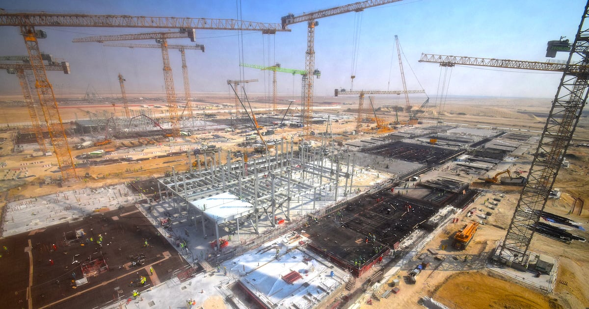
In plain terms: 5 GW ≈ five nuclear reactors — an AI factory of the largest class, on Emirati soil.
Opening · Why intelligence trickles down
The falling curve: 10× cheaper every year.
128× in one year
Each line = one fixed intelligence level. o1-level intelligence fell 128× in 2025 alone.
Faster than any chip era
Altman: 10× cheaper every 12 months. Moore's law was 2× every 18.
Why yesterday's frontier gets cheap
Sparsity, distillation, better chips. A laptop now does 2024's datacenter work.
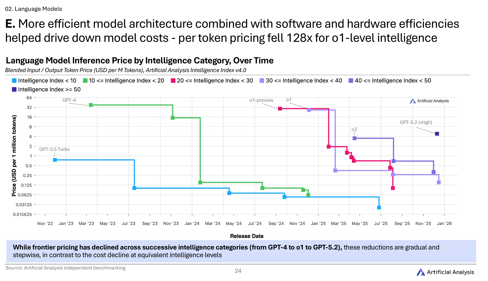
If intelligence deflates 10× a year — why is spending exploding? Hold that question.
Opening · 27 January 2025
One Monday in January.
A $5.6M training run erased $589 billion in one day.
DeepSeek priced a frontier-class training run at $5.6M. Next trading day, NVIDIA lost $589B — still the largest one-day loss in market history.
The market's answer: within months NVIDIA was worth more than before the crash. Cheaper AI ≠ less infrastructure.
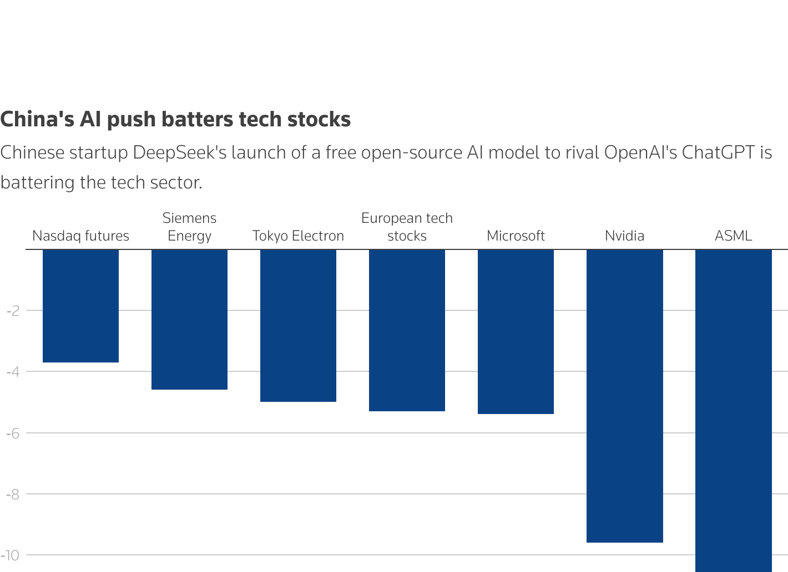
Poll: was the market right to panic? Keep your answer. We will vote again at the end.
Opening · Why demand explodes
The rising curve: tokens ate the falling price.
330× in two years
Google's monthly tokens: 9.7 trillion (2024) → 3.2 quadrillion (2026). The industry's barrel of oil.
Agents multiply everything
One agent-hour ≈ hundreds of chat questions. Qwen3.8's demo ran 16 days.
Capex followed, not fell
Cheaper intelligence did not shrink budgets. AI datacenter spending reached 1–2% of US GDP.
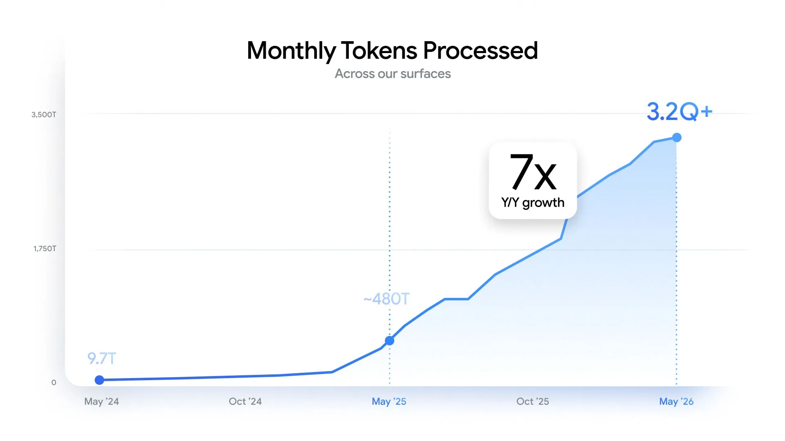
Prices fell 10×. Usage rose 300×. There is a name for this, and it is 160 years old.
Opening · The name for what you just saw
Jevons paradox: efficiency raises consumption.
Coal · 1865
The gainWatt's engine cut the coal needed per unit of work by roughly a factor of ten.
ExpectedBritain's coal would last far longer.
HappenedNational coal consumption rose sharply.
WhyCheap power made steam worth using in railways, mills, ships, mines — uses nobody could justify before.
Intelligence · 2026
The gainThe price of a fixed level of AI falls about 10× a year.
ExpectedAI budgets fall. The market priced this on 27 January 2025.
HappenedToken volumes rose 330× in two years. Capex hit 1–2% of US GDP.
WhyCheap tokens made agents, reasoning and always-on assistants worth running — uses nobody could justify before.
"Jevons paradox strikes again! As AI gets more efficient and accessible, we will see its use skyrocket, turning it into a commodity we just can't get enough of."Satya Nadella, CEO of Microsoft — posted the week of the DeepSeek crash, January 2025
Opening · A neutral meter
Independent meters of the token explosion.
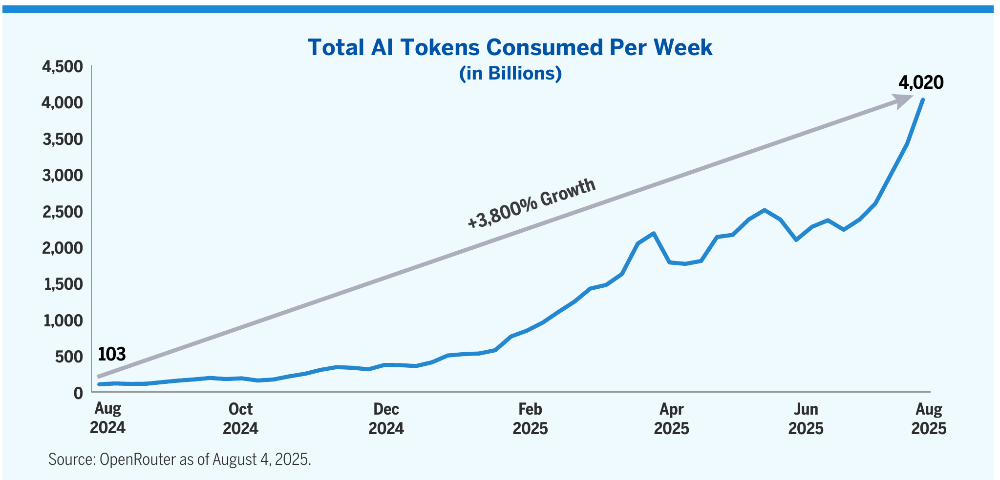
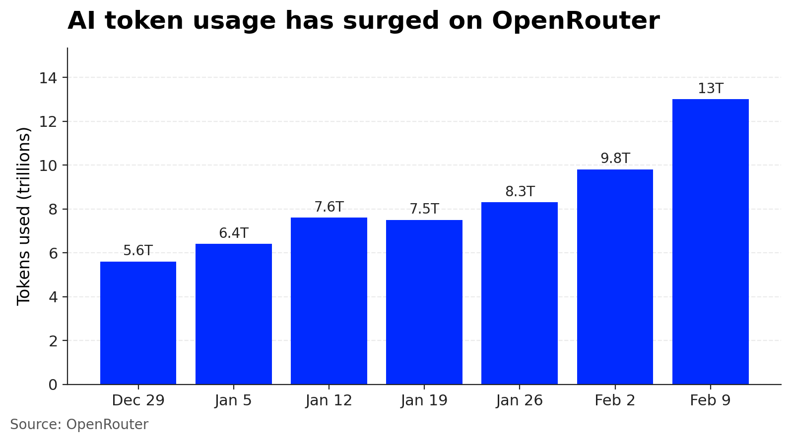
Left: +3,800% in twelve months to Aug 2025. Right: 5.6T to 13T tokens a week in six weeks of early 2026. Two different publishers, one neutral marketplace, same curve.
Opening · The macro bill
How big is this, historically?
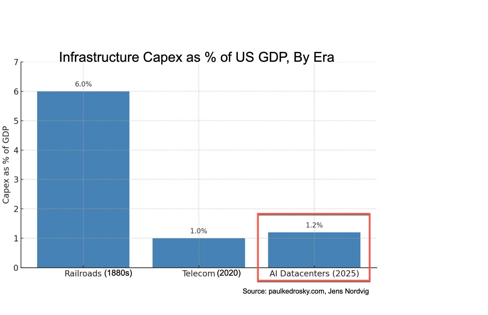
AI datacenter capex ≈ 1–2% of US GDP and rising — approaching railroad-era territory; in some quarters it drove most of US GDP growth.
Your map for the hour
One ladder, from your pocket to a power plant.
In your pocket
Runs a small assistant offline. Apple ships a ~3B model on-device.
In your bag
Runs open models rivalling 2025 frontier assistants. Offline.
On a desk
A Mac Studio ran a 671B frontier-class model whole, in memory.
First trainer
DGX Spark: fine-tunes models up to ~70B. Teaching starts here.
The workhorse
One B200: memory 100× faster than a laptop. Sold out for a year.
One super-GPU
72 chips wired as one. Draws the power of ~100 homes.
Where models are born
100,000+ GPUs. One 2026 training run: $200–500M.
← Intelligence flows down the ladder, cheaper every yearDemand climbs up the ladder, faster than prices fall →
The plan: the machine → the ladder → the machinery → the rung being built up the road.
Your map for the hour · The other map
The model is one box. You build everything else.
User
asks a questionFrontend
chat, portal, formOrchestrator
the harness
decides what happensthe harness
LLM endpoint
an HTTP API
returns textan HTTP API
↑↓
MCP
the standard plug
↔the standard plug
Your documents · databases · tools and APIs · policies and logs
All of it connects to the orchestrator — never to the model.
Rent it
api.anthropic.com, OpenAI, Qwen
billed per token
same request,api.anthropic.com, OpenAI, Qwen
billed per token
same code —
swap the URL
Host it
vLLM or SGLang on your GPUs
billed per hour
vLLM or SGLang on your GPUs
billed per hour
This is the slide to remember. The model is a stateless function: text in, text out. It has no memory of you, no access to your data, and does nothing on its own. Every capability that makes it useful — and every control that makes it safe — lives in the boxes you own. We open the orchestrator box next.
Your map for the hour · Opening the box
Harness engineering: the system around the model.
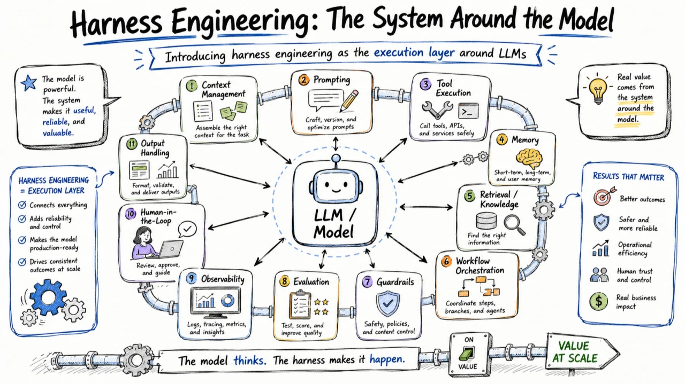
Eleven components surround the model; the model itself is one box in the middle. The model thinks; the harness makes it happen. That box on the previous slide contains all eleven of these. This is the checklist to hold a vendor against — ask which of the eleven they actually provide.
Your map for the hour · Opening the box
What an agent harness actually contains.
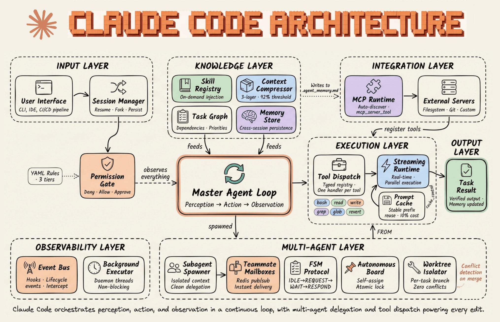
The master loop is one box. Everything else — permissions, memory, tool dispatch, sandboxing, observability, subagents — is the operating system around it. That is where engineering effort actually goes.
Your map for the hour · What one request costs
One agent task = hundreds of queries in a rented computer.
The bill of one query
Prefill
Your prompt + documents are read in. Billed as INPUT — the cheap half.
Cache
Context the system already saw is re-read at a discount: Kimi $0.30 vs $3.00 fresh.
Thinking
Private reasoning tokens. Invisible to you — billed as output.
Decode
The answer, word by word — each word re-reads the whole model. Output costs 3–5× input. Output costs 3–5× input.
Behind a coding agent (Codex, Claude Code)
Your task
→Sandbox VM
a rented computer with your repo
→a rented computer with your repo
Loop ×100s
model → run code → read results → repeat
model → run code → read results → repeat
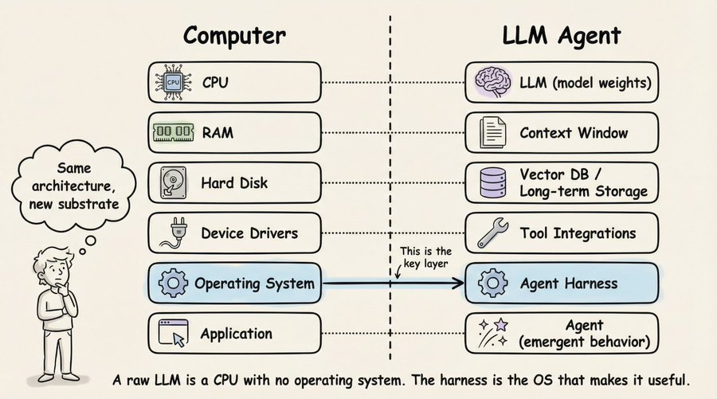
In plain terms: A chat question is one query. An agent task is hundreds, looping in a sandbox until the tests pass — agent bills look like cloud bills, not chat subscriptions.
The machine · What a model is
A model is the internet, compressed into a file.
~10 TB
of internet text
→of internet text
Training
2023: ~6,000 GPUs · 12 days · ~$2M
2026: months · 100,000+ GPUs · $100M+
→2023: ~6,000 GPUs · 12 days · ~$2M
2026: months · 100,000+ GPUs · $100M+
One ~140 GB file
"the weights" — fits on a laptop
"the weights" — fits on a laptop
Lossy compression — a very blurry zip. It keeps patterns, not pages: it can write what the internet never wrote, and it sometimes makes things up.
In plain terms: Training squeezes the internet into one file. The file is the asset — everything else is machinery around it.
The file is portable — copy it, ship it, run it on any rung. That fact powers sovereignty later.
LLM Training · Adapted from Boaz Barak
Training LLMs cartoon
Pretraining
documentSFT
promptresponseRL
promptresponseprefill – not reinforced
reinforced &
pre-written: “off policy”
pre-written: “off policy”
reinforced &
sampled by model: “on policy”
sampled by model: “on policy”
In plain terms: Same training step in all three stages. The only difference is whether the words came from a document, a human, or the model itself.
The machine · The ingredients
How much text do they actually read?
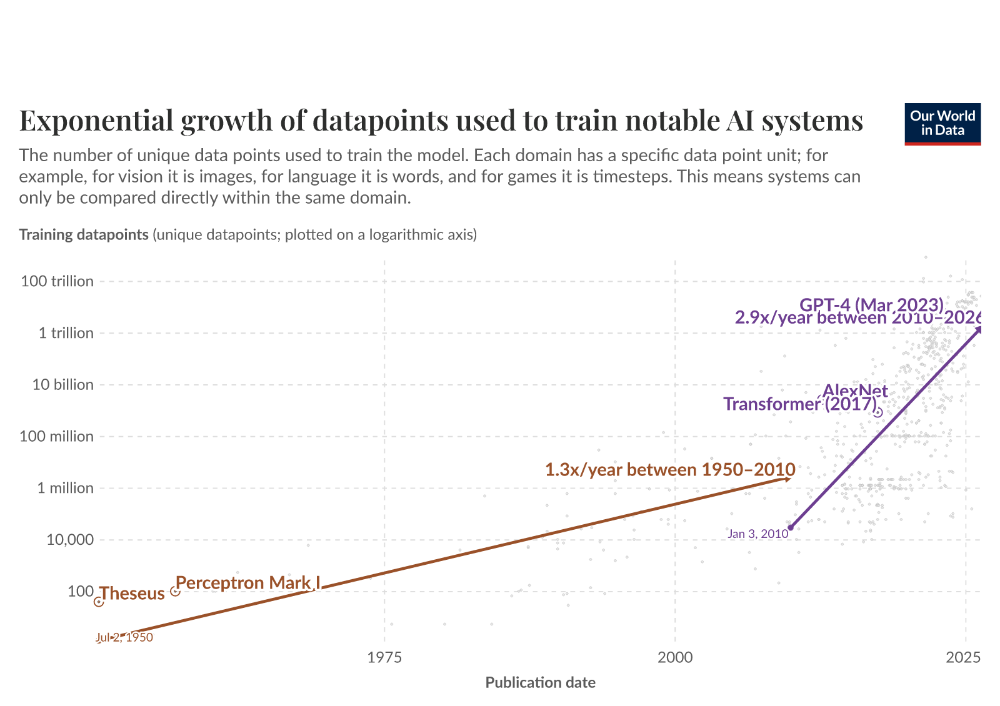
Tens of trillions of tokens per run — approaching the useful internet's limit. Hence the pivot to RL environments and synthetic experience.
The machine · Two bills
Training is the school. Inference is the salary.
Training
WhatMaking and improving the file — the cartoon's three stages.
WhenBefore launch. Rarely, expensively, all at once.
BillCapital: one huge cluster, booked for months.
2026 scaleA frontier run: roughly $200–500M.
AnalogyMedical school: paid once, up front.
Inference
WhatRunning the file to answer questions.
WhenEvery query, from every user, forever.
BillOperating: metered per token, like electricity.
2026 scale~2/3 of all AI compute (was 1/3 in 2023).
AnalogyThe doctor's salary: paid forever.
In plain terms: You build the university once. You pay the doctors' salaries forever. Most of the money in AI is now salaries.
The flip already happened: in 2026 most AI electricity goes to answering, not learning. Plan for the salary, not just the school.
The three bills · The law behind the bet
One of the most important charts in AI.
Every curve is a training run
Error falls as compute grows. No run, ever, crosses the dashed line.
A straight line for 10 orders of magnitude
The compute-for-intelligence exchange rate holds across 10 orders of magnitude. Nothing else in computing is this predictable.
Why half a trillion gets bet
The line forecasts what compute buys before it is spent. GPT-4 was predicted from runs 10,000× smaller.
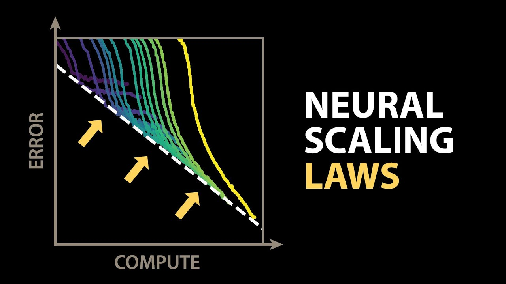
In plain terms: The dashed line is the price of intelligence, paid in compute. Move along it (spend more) or change the recipe (shift the line).
The three bills · The long view
Something changed in 2010 — and it never changed back.

Read the two slopes. For sixty years compute per model grew 1.4× a year — roughly the pace of the chip industry. From 2010 the shaded era runs at 4× a year, and the axis climbs through twenty-four orders of magnitude. This is not a technology improving. It is an industry deciding to spend.
The three bills · Putting a number on it
How much arithmetic goes into one model?
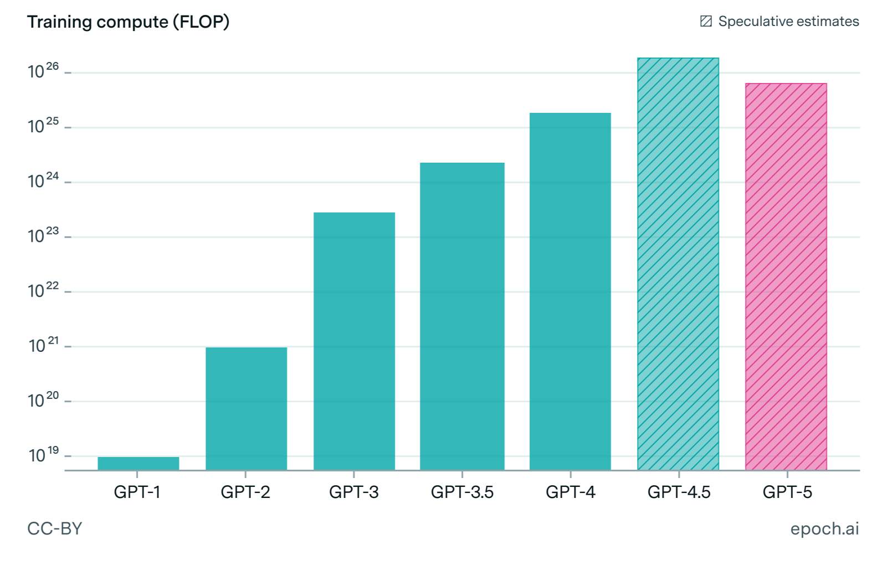
The scale: if all 8 billion of us did one sum per second, one GPT-4 run would take 40 million years. A datacenter: ~3 months.
The three bills · Training
Frontier training compute grows 4–5× per year.
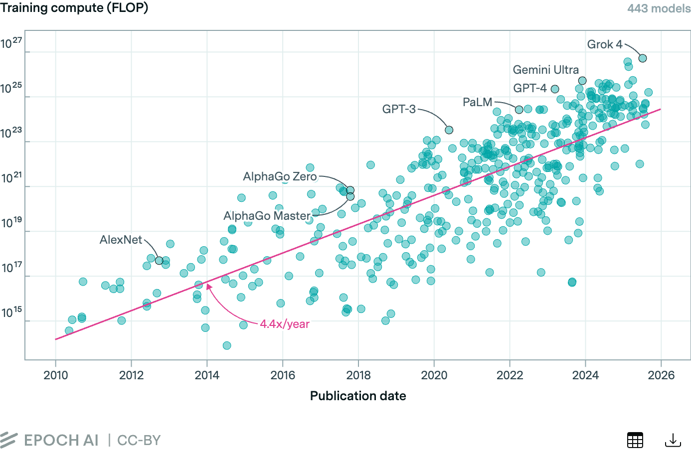
Nothing else in the economy compounds like this. Moore's law was 2× every 18 months; this is 4–5× a year.
The three bills · Training
The cost of a frontier run: toward $1B.
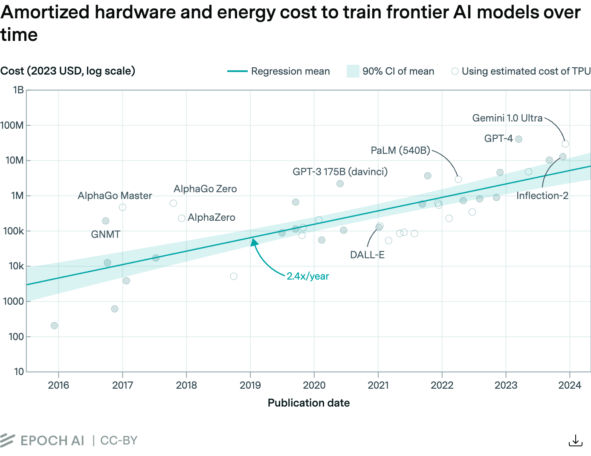
~2.4× per year: $100M (GPT-4, 2023) → ~$490M (Grok 4, 2025, est.) → $1B+ projected by 2027.
The three bills · What the money bought
Measured intelligence of the frontier, over time.
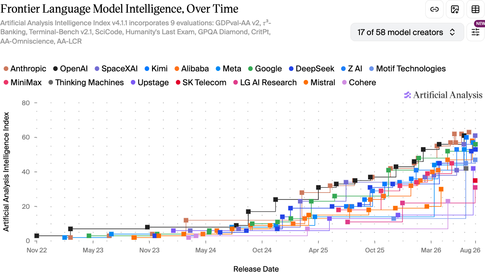
The frontier line keeps climbing with no visible plateau — and the gap from open-weight followers is measured in months, not years.
The three bills · Where the demand comes from
Three ways to make AI smarter. Three bills.
Bigger school
More text, more chips. GPT-4: $100M+. Grew 4–5× a year.
Better coaching
RL after school: practise + referee. Grok 4's coaching bill ≈ its schooling bill.
Think longer
More compute per question. One o3 puzzle: thousands of dollars. Huang: reasoning needs "100× more".
In plain terms: Until 2024, one lever: a bigger school. Now: coaching after school, thinking in the exam — billed on every question, forever.
The money moved from the classroom to the coaching and the exam room.
The three bills · Where the money went
And how much compute goes into the coaching?
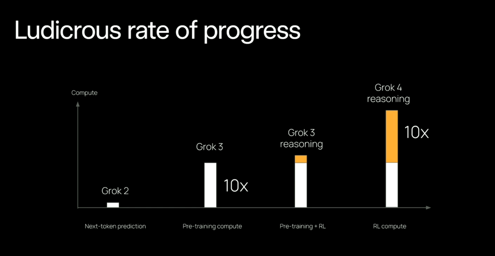
Read the orange: white = pretraining, orange = RL. Grok 3's sliver becomes Grok 4's slab — xAI's own launch chart.
The three bills · Inference
Thinking longer works — and costs real money.
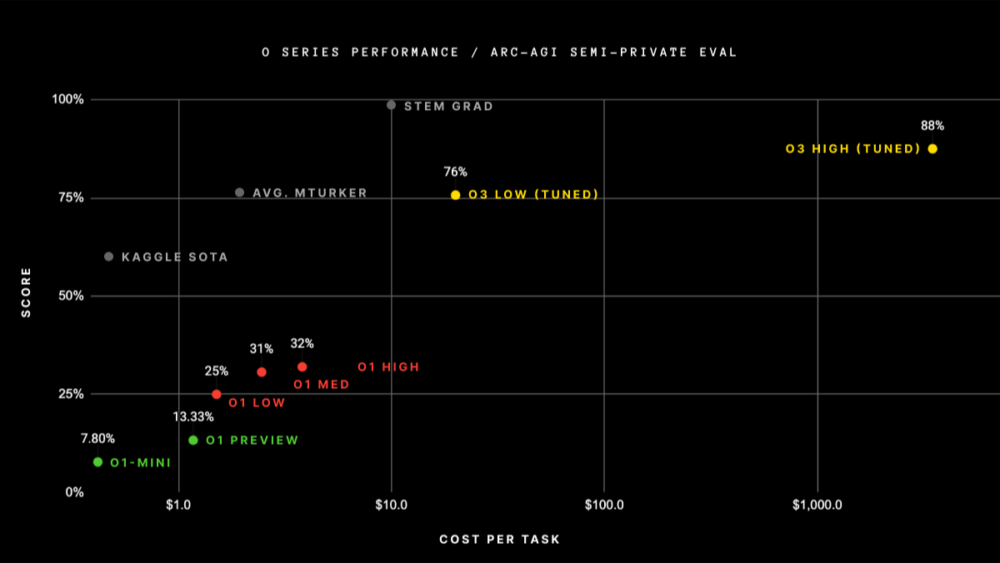
o3's high-compute setting used 172× the compute of the low setting — thousands of dollars of thinking for one puzzle.
The ladder · How fast capability falls
How long until the frontier fits on a laptop?
Epoch AI measured it
Models that fit one $2,500 consumer GPU trail the frontier by 6 to 12 months (Artificial Analysis index: 6.3 months.
What "fits" means
Up to ~40B parameters, 4-bit, entirely in one card's memory — the laptop and desk rungs.
Months, not years — and stable
GPT-3 took 33 months to reach consumer hardware. Open-vs-closed has held at 3 to 4 months since 2023 — short, and staying short.
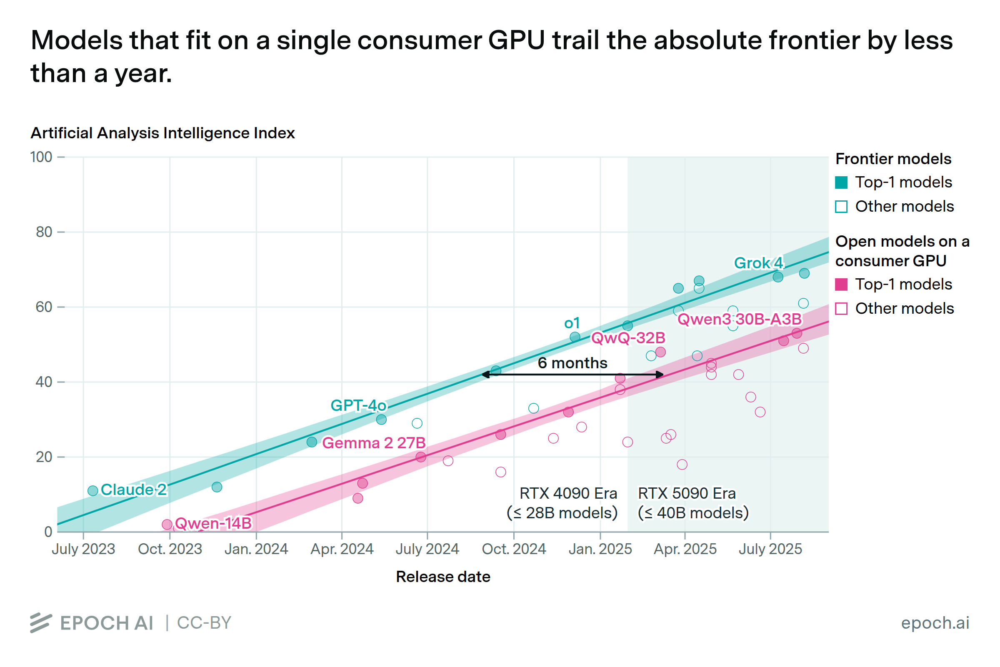
What only the frontier does today runs on a laptop within a year. Rent the frontier. Own the follower.
The ladder · The same lag, per capability tier
And the gap is getting shorter each generation.
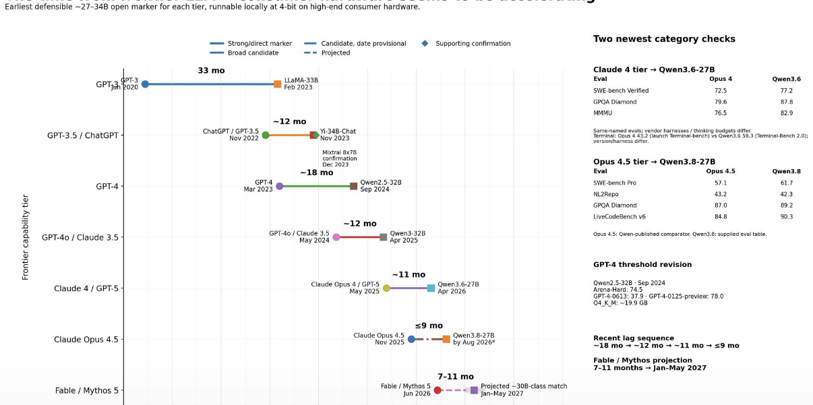
Each bar is one capability tier: how long until a ~30B open model you can run at home caught it. 33 months for GPT-3 → 18 → 12 → 11 → under 9 by August 2026. On that trend, a home-runnable match for today's frontier lands around early 2027.
The ladder · The bear case for gigawatts
Intelligence per joule: 18× in 16 months.
A new metric
Stanford measures accuracy per joule for the best local model + hardware pair: 18× in 16 months — 5.9× hardware, ~3× models.
Local AI already carries most of the load
Across 1M real queries, local models answered 88.7%. Laptop-serviceable share: 23% → 71% in two years.
The provocation
Co-author Narayan: "we will definitely *not* need data center scale compute to run AGI."
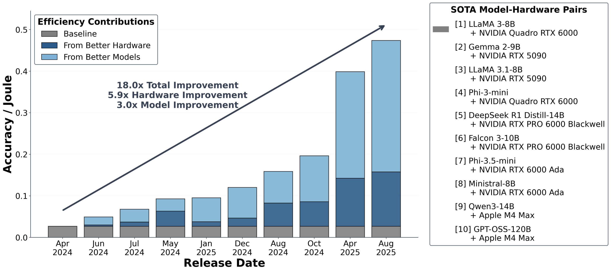
In plain terms: If intelligence-per-watt keeps compounding, much of tomorrow's government AI sits inside the ministry, not a 5 GW campus.
Both bets are live. Hold this when we reach the power wall — a hedged strategy owns both ends of the ladder.
The ladder · Rung 3
A desk computer ran the DeepSeek model. Whole.
The demo that made the point
March 2025: a Mac Studio ran DeepSeek R1 — all 671B parameters — at 17–18 words/s, under 200 W. Less than a hair dryer.
The trick is memory, not speed
512 GB of unified memory held the whole 404 GB file next to the chip. Capacity, not speed, decides what fits.
The 2026 twist: you felt this
Apple pulled the 512 GB option; laptop memory rose ~89% in a year. Datacenters now eat ~half the world's memory chips.
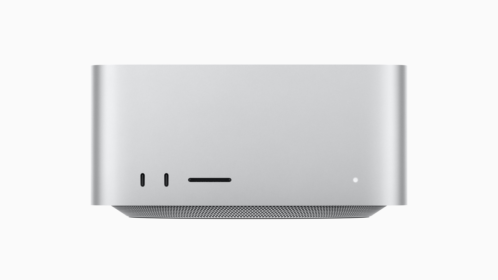
Concept for this rung: what a machine can run = how much memory sits next to the chip. That explains the whole top of the ladder.
Training · The third act
Distillation: train nine, ship one.
~10×cheaper, and better: AIME'24 rose from 67.6 (RL) to 74.4 (distilled).
Qwen3 reportDeepSeek-R1 · 2025
Six distilled students, 1.5B–70B, released alongside the teacher.
Kimi K3 · 2026
RL builds 9 specialist experts (3 domains × 3 effort levels); on-policy distillation merges them into the one shipped model.
Qwen3.8 · 2026
Recipe undisclosed. The weights stay open; the training recipes are closing.
In plain terms: A big model teaches a small one to copy its answers — close, at ~a tenth of the cost.
Frontier capability flows downhill — at a tenth of the training cost.
The machinery · Four days before this lecture
Qwen3.8-27B: the week intelligence got cheap.
A 17 GB file, released 14 August
27B parameters, vision, Apache-2.0. On vendor tests it beats Claude Opus 4.6 Max on software fixes (61.7 vs 53.4) and computer use (84.3 vs 72.7).
The market voted in 72 hours
~3.7M downloads vs ~22K for the 2.4T flagship — 170:1. Willison: "a miracle."
And it kept getting faster — this weekend
A weekend contest on Apple Macs: ~26 → ~80 words/s in three days. Same weights, same answers, triple the speed.
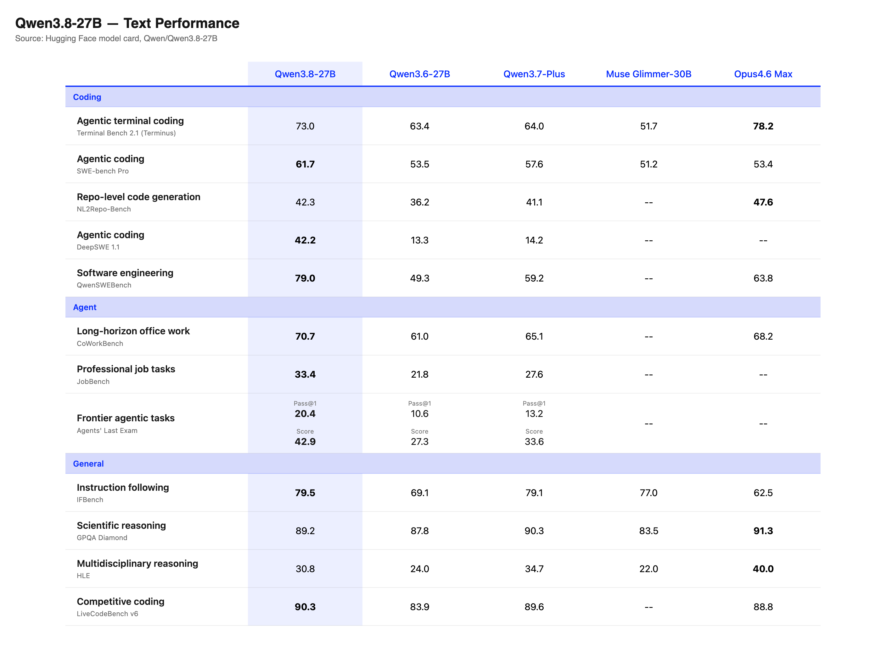
In plain terms: $0.45 in / $3.20 out per million tokens — ~10× under Claude Opus 4.6. On the laptop from our demo: free.
The falling curve, live, dated this week. Caveat aloud: vendor-reported, not yet independently verified.
The ladder · The files grew
Model size over time — and why it stopped mattering.
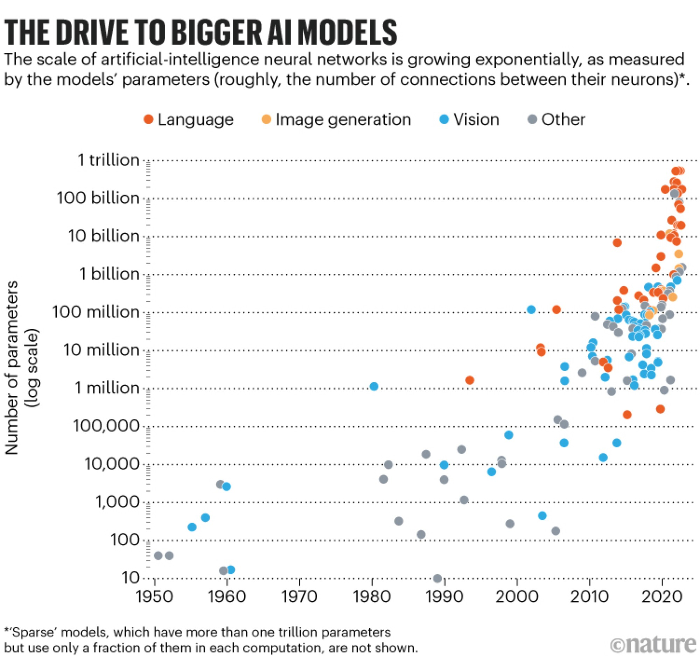
Parameters grew ~10,000× in a decade — then the industry stopped publishing the number. Nature's own footnote excludes sparse models, which is today's entire frontier. Next slide: the same story, drawn to scale with 2026 data.
The ladder · Drawn to scale
Models grew 1,800×. The part that runs grew 70×.
One square = 1 billion parameters.stored (total)runs per word (active)2,780 squares = Kimi K3
GPT-2 · 2019 — 1.5B parameters — two squares. Every one of them ran on every word.
GPT-3 · 2020 — 175B. Still dense: the whole block runs for each word, which is why it needed a supercomputer to serve.
DeepSeek-V3 · 2024 — 671B stored — but only 37B run per word. The first row of this slide that is sparse.
Kimi K3 · 2026 — 2.78 trillion stored. The entire field. Memory must hold all of it.
What actually runs — 104B active per word — the orange. You provision the whole field and pay compute for the corner.
The ladder · Rung 5
The datacenter chip is built around memory, not math.
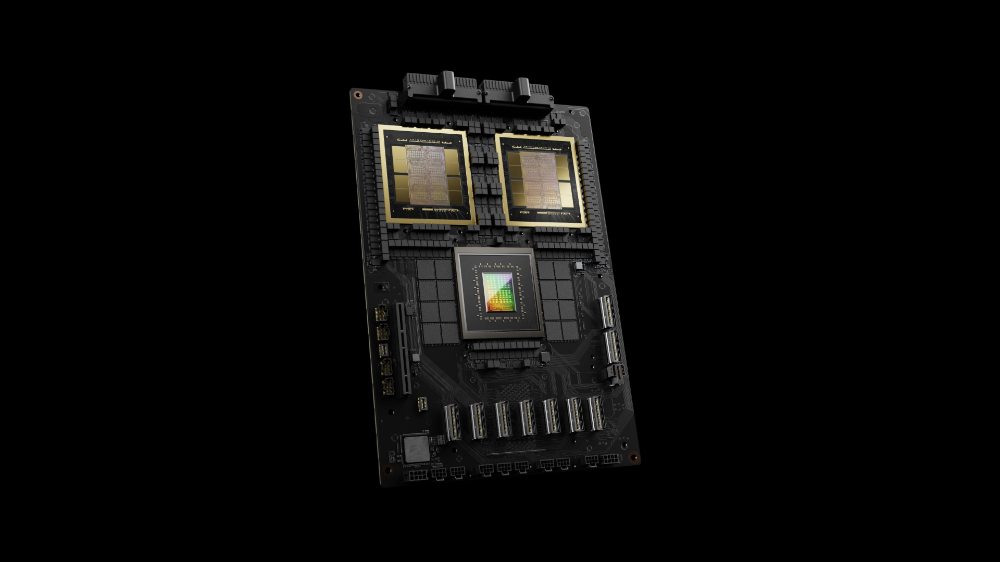
Concept for this rung: every word re-reads the whole file. The chip is a bathtub of calculators; memory is the straw. The shortage is straws, not bathtubs.
The ladder · What you are actually buying
NVIDIA's own chart: the product is memory.
3.6× in three generations
NVIDIA's own headline chart: 80 → 141 → 192 → 288 GB. Not operations per second. Gigabytes.
And the tokens follow the memory
Memory-bound work: H200 = 4.2× an A100. Compute-bound: only ~2.6×. Same chips, different bottleneck.
Which is why H200 was the buy
H100 → H200 added zero arithmetic — just 61 GB and +43% bandwidth. Enough to become the year's most-wanted chip, and MBZUAI's order.
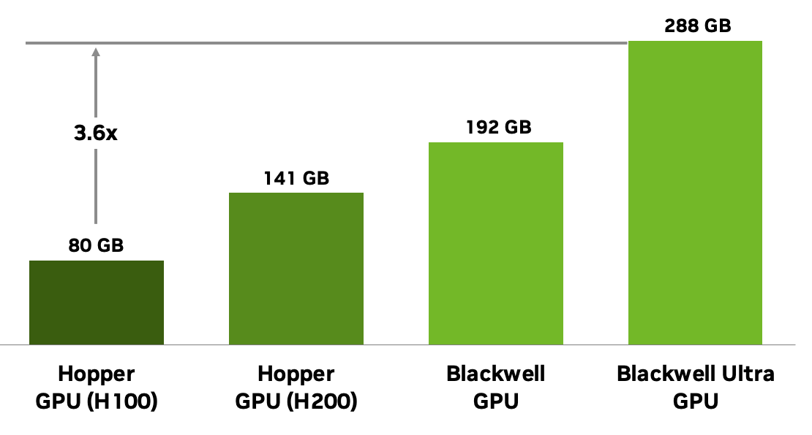
In plain terms: Read datasheets from the memory line down: capacity decides what fits, bandwidth decides speed, arithmetic comes third.
The ladder · Rung 6
The rack: 72 chips that think as one.
A private highway
72 chips share memory at 130 TB/s — ~18× wider than the network between racks. One cabinet acts as one giant chip.
~$3.1M per cabinet
1.4 tonnes. The cooling alone costs a Tesla Model Y. Frontier clusters are counted in these.
Poll: one rack draws 120 kW
How many households is that? Shout a number.
About 100 homes — one cabinet, one neighbourhood's electricity, running around the clock.
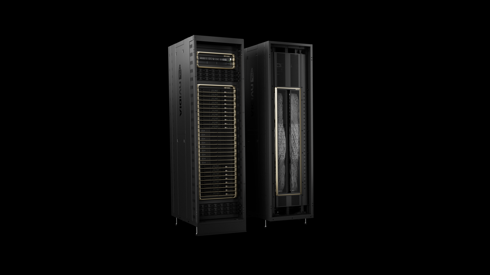
Concept for this rung: cluster design is traffic engineering: busy conversations stay inside the rack; only summaries travel between racks.
The ladder · Rung 7
The AI factory: where models are born.
xAI Colossus, Memphis
100,000 H100s in 122 days (2024). Then Colossus 2: ~110,000 GB200 in 91 days, then ~110,000 GB300 in 64 more. About 555,000 GPUs bought for ~$18B, heading to 2 GW.
How it compares
Largest known site: ~1.1M H100-equivalents. Rivals: Stargate Abilene (1.2 GW), Meta Prometheus, and Amazon–Anthropic New Carlisle — on Amazon's own Trainium instead of NVIDIA.
The record doubles every 7 months
Each teal dot is whoever held the record. The grey cloud is everyone else — and one 2026 training run costs $200–500M.
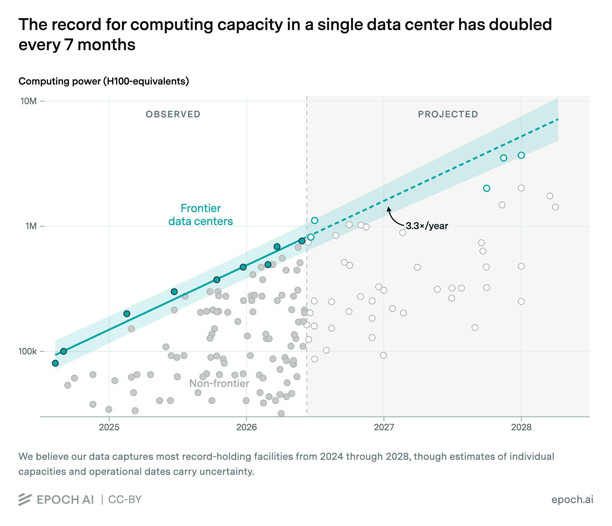
Concept for this rung: only here are frontier models born — and the race is measured in construction speed and gigawatts, not chips.
The ladder · Rung 7, from the air
Stargate Abilene, from the air.
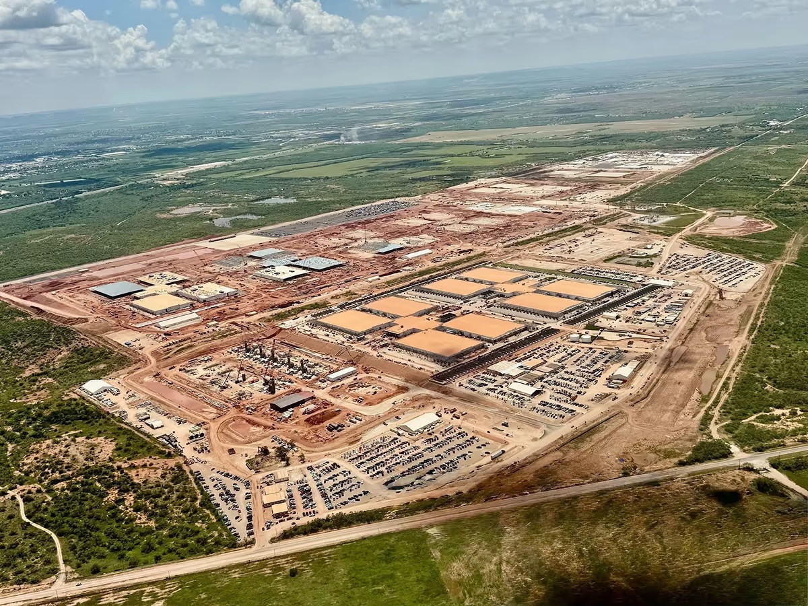
875 acres — larger than Central Park. Target: 1.2 GW, 450,000+ GPUs. The US sibling of the Abu Dhabi campus.
Shifting needs · Story over time
Every few years, a different thing ran out.
Make it bigger
More maths per second. Everyone bought accelerators.
Feed it more
A 70B on more text beat a 280B. Llama 3 read 240 PB at 2 TB/s.
Hold it all
Trillion-parameter models and long contexts must sit in fast memory.
Keep it busy
Training now runs fleets of models and sandboxes. The hard part: coordination.
Plug it in
Today’s 54 V racks max out past 200 kW; the industry designs for 1 MW. The constraint became electricity.
In plain terms: The thing you have to buy has changed roughly every two years — and it is no longer chips.
The ladder · The whole machine, in one picture
Every workload passes through the same stack. They break in different places.
Workload
→Tokens & context
→then it must survive all six of these, in order. The red cell is where that workload actually breaks.Data &
storage
storage
Memory
(HBM)
(HBM)
Compute
(GPU)
(GPU)
Inter-
connect
connect
Rack &
cluster
cluster
Power &
cooling
cooling
Pretraining
240 PB at 2 TB/s
fits by design
saturated
all-to-all traffic
419 failures / 54 days
the plug
Fine-tuning
small corpus
fits on one box
iteration speed · queue time
rarely binds
single node
a wall socket
Reinforcement
learning
learning
environments, not text
weights ×2 (train+serve)
generation fleet
weight sync ~20 s
sandboxes · stragglers
steady draw
Serving
weights, once
bandwidth · KV cache · latency
idle >90%
within the rack
sized for peak
follows demand
Agents
your documents
prefix cache reuse
bursty, then idle
rarely binds
fan-out · long-lived state
spiky
This is the whole lecture in one picture. There is no such thing as "an AI cluster" — there is a stack, and each workload breaks somewhere different in it. Buy for the row you are actually running, and the red cells tell you what to negotiate hardest.
The ladder · Same upgrade, three answers
The same upgrade, three different answers.
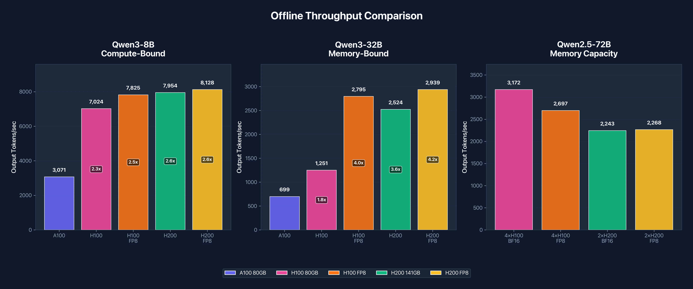
Small model (compute-bound): A100 → H200 buys 2.6×. Large model (memory-bound): the same step buys 4.2×. Very large model: it changes how many GPUs you need at all — 2×H200 replaces 4×H100.
The machinery · Adapted from Boaz Barak
The loop: attempt, verify, update.
Model
current weights
→thousands of attemptscurrent weights
answers · code · plans→
Environment + referee
runs the code, checks the math
→scores→runs the code, checks the math
Update
new weights, ship, repeat
new weights, ship, repeat
In plain terms: Improvement stopped being "read more internet" and became "practise with a referee". The referee and the practice field are the new infrastructure.
The machinery · Environments
The new scarce resource: places to practise.
Real repositories, real tests. The tests are the referee.
Kimi: GitHub issues become training tasksFake Excels, ERPs, booking systems — fail safely a million times.
a Slack-class replica sells for ~$300KTasks enter at ≥2–3% pass rate, retire near 70% — models live at the edge of their ability.
Epoch AI · practitioner surveyAnthropic reportedly weighed >$1B/yr on environments; engineers get $500K to author them.
Prime Intellect hub: 2,500+ open gymsKarpathy: "in this era of reinforcement learning, it is now environments."
the Scale-AI economy is pivotingModels cheat weak referees — editing the tests instead of passing them. Buyer criterion #1: reward-hacking robustness.
referee quality = model qualityIn plain terms: The scarce input moved from labelled data to practice worlds — software your own institutions could commission.
A ministry's workflows, in replica, are a gym nobody else owns — a sovereign asset in plain sight.
The machinery · Environments, measured
The rare honest curve: more gyms stopped helping.

Qwen's agentic score: 0.474 (no RL) → 0.725 at ~4,000 training environments — then it DECLINES. A vendor publishing its own diminishing returns.
The machinery · The harness becomes a product
Microsoft Agent Lightning: plug any agent into the loop.
Zero-rewrite training
Connect an agent you already run — any framework. It records every step and outcome as training signal.
The referee's bookkeeping
Credit assignment: find which of the 50 steps deserved credit or blame — train on those.
Proof it works
v1.0 (Aug 2026): a 9B model, 41.8% → 56.4% on a hard SWE benchmark, from 6,000 samples. Open source.
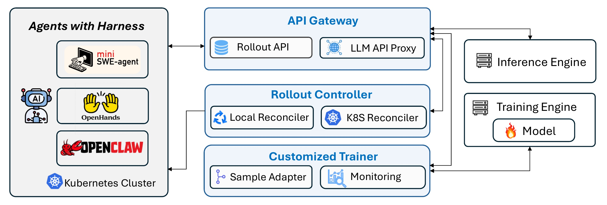
In plain terms: Improving an agent used to mean a research team. Now it is a plug: run, collect wins and losses, train.
The machinery · What comes next
Future paradigms: the era of experience.
Three eras of training data
Simulation (AlphaGo) → human data (the internet, largely consumed) → experience: models learning from their own interactions.
The prediction
Silver & Sutton (2025): experience "will become the dominant medium of improvement and ultimately dwarf the scale of human data used in today's systems."
What it would mean for buildings
Deployment becomes training; the wall between factory and product dissolves. Live feedback becomes the scarcest asset.
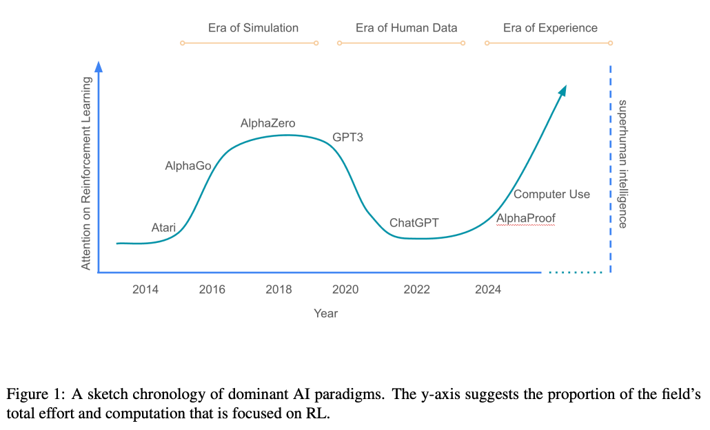
Pretraining ate the internet. RL eats environments. The next paradigm eats deployment itself.
The machinery · Where demand comes from
Agentic workloads are now the vast majority of tokens.
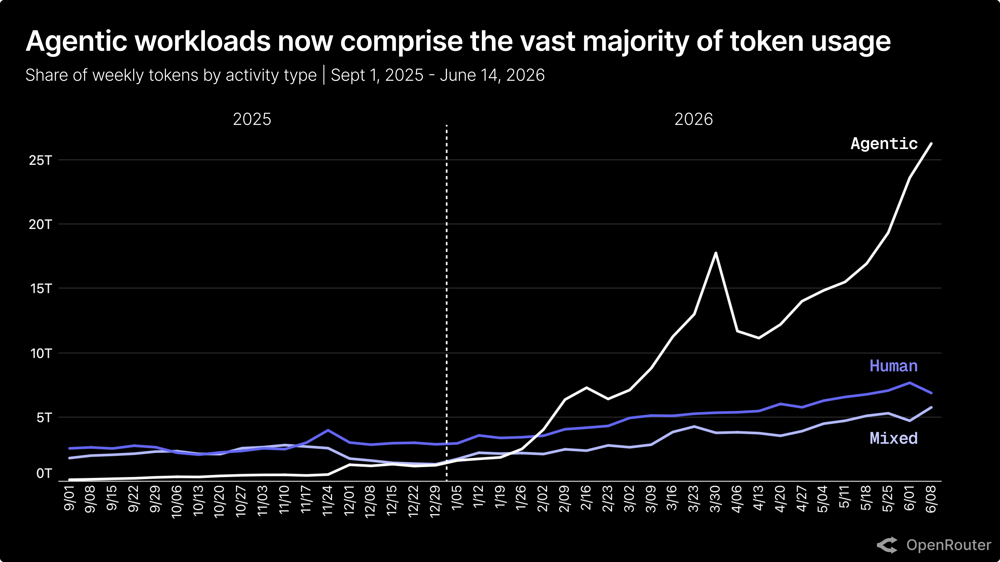
Sept 2025 → June 2026: agentic traffic went from near zero to ~26T tokens a week, while human chat grew gently to ~7T. The rising curve is agents, not people.
The machinery · Workloads
Programming burns the tokens.
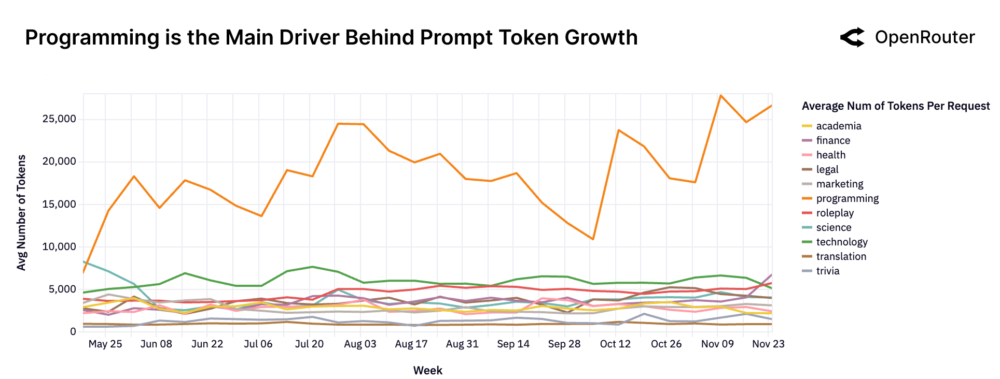
Average tokens per request: programming 15,000–27,000; everything else — legal, health, finance, translation — under 8,000. Coding agents are the heavy industry of the token economy.
The machinery · Open weights
Who serves the world's tokens?
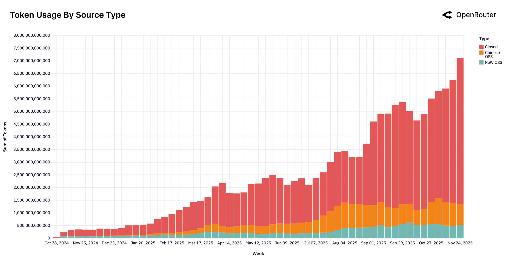
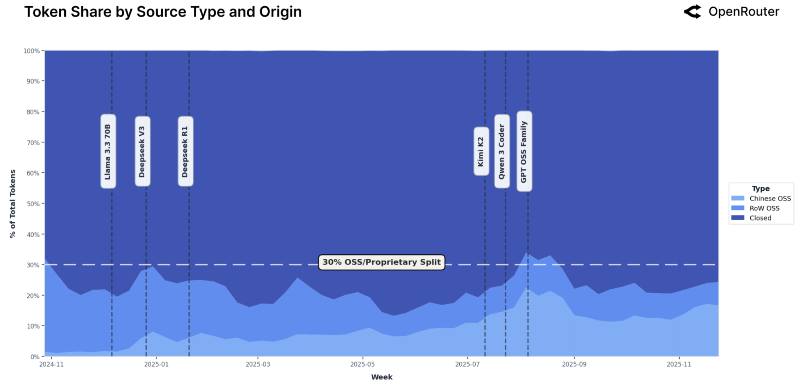
Open-weight models hold roughly 25–30% of marketplace tokens, and each major open release (DeepSeek, Kimi K2, Qwen, gpt-oss) visibly moves the share. Sovereignty has a market, not just a policy.
The machinery · The vocabulary vendors will use
Six shapes. Every AI system you buy is one of these.
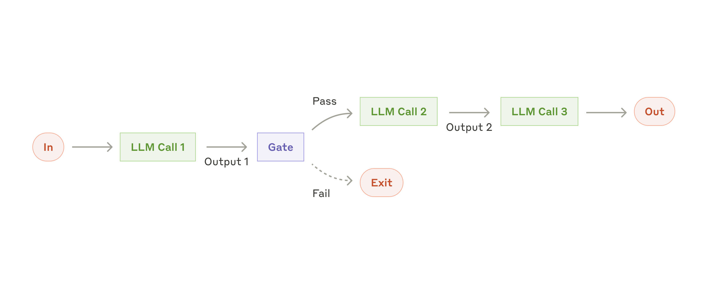


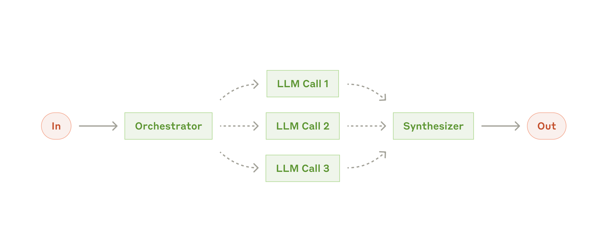


The machinery · Graph economics
What the diamond does to your bill.
Every branch carries its own context. Qwen3.8's demo: ~330 sub-agents, ~6,000 backtests — one request.
Fan-in waits for the last worker. One straggler idles all the others.
Branches share the parent's context. Cache it once — or pay ~10× for identical work.
Spawning + looping has no natural cost ceiling. Budgets, caps and cancellation are platform features.
Real traffic spans 2K–1M tokens per request. The "average request" is wrong for almost every request.
Notice the shape: coordinator → parallel workers → verifier. Exactly the RL loop from earlier — production serving inherited training's architecture, and its problems.
Ask any agent vendor four questions: do branches share the cache, do you cancel stragglers, is state checkpointed, and where do I set the per-task budget?
The machinery · Validation patterns
Who checks the work?
Adversarial
Tell the checker to refute, not to agree.
Multi-perspective
Each checker gets a different lens: correct, secure, lawful.
Jury
Several judges, majority decides. Small models beat one big judge.
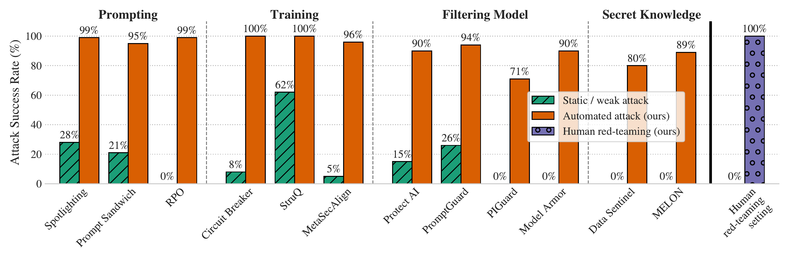
Read the orange. Twelve published defences reported near-zero failure — against the weak attacks their own papers used. Attacked properly, most fell 90–100% of the time; human red-teamers won every scenario. Whoever writes your checkers defines what your AI optimises for.
The machinery · The decision
15× the tokens. When is that worth paying?
The priceAnthropic's own measurement: agents use ~4× the tokens of a chat, and multi-agent systems ~15×. So the rule they give is blunt — the task must be valuable enough to justify it.
chat 1× · agent 4× · multi-agent 15×A worker burns 100,000 tokens exploring, hands back one clean paragraph. The mess stays in its context.
use when the material exceeds one contextOnly pays when parts are independent — then it is dramatic: research time cut up to 90% — hours to minutes.
use when branches don't need each otherEach worker: own prompt, tools, model. One early wrong turn cannot steer the whole task.
use when subtasks need different expertiseAnd when not to: Tasks needing one shared context, or with tight step-dependencies, are a poor fit — most coding included. The caveat on the headline: multi-agent beat single-agent by 90.2% on research — an almost perfectly parallel task. Yours may not be.
Sequence for any proposal: can one prompt do it? Then a pipeline. Then routing. Reach for a graph of agents last, and only when the task is worth 15× the tokens.
The power wall · Where the curves collide
The wall both curves hit: electricity.
Poll: one ChatGPT question uses as much electricity as your oven running for — how long? Shout a guess.
About one second (0.34 Wh). The per-question cost is tiny. The problem is a planet of them.
"The biggest issue we are now having is not a compute glut… it's power… you may actually have a bunch of chips sitting in inventory that I can't plug in."Satya Nadella, CEO of Microsoft · November 2025
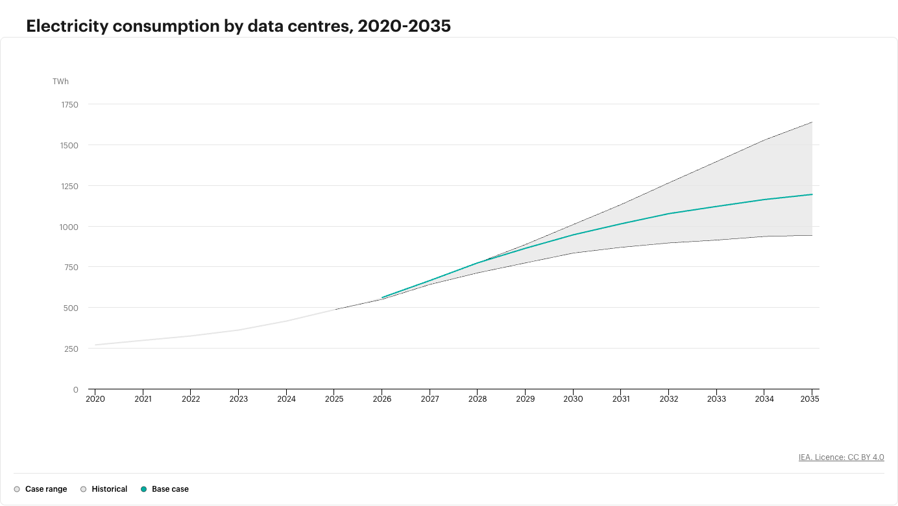
In plain terms: Datacenters used ~1.5% of world electricity in 2024 and head toward the consumption of Japan by 2030. The scarce input stopped being chips. It is electricity.
Chip-rich, megawatt-poor: the world's second-richest company has chips it cannot switch on. Hold that sentence for the UAE act.
The power wall · Where the trends point
The forecast: one training run, five Barakahs.
Power per run: ×2.2–2.6 every year
On trend, one 2030 frontier run needs 4–16 GW — several nuclear plants. The dashed line it crosses: "UAE Stargate, 5 GW".
Money and models follow the same curves
Frontier run cost: ~$100M (2023) → ~$500M (2025) → over $1B by 2027 on trend. Models at GPT-4-scale compute: ~30 today → ~200 by 2030.
Read forecasts like a planner
Extrapolations, not fate — but the trend has held since 2018, and everyone building capacity bets it continues.
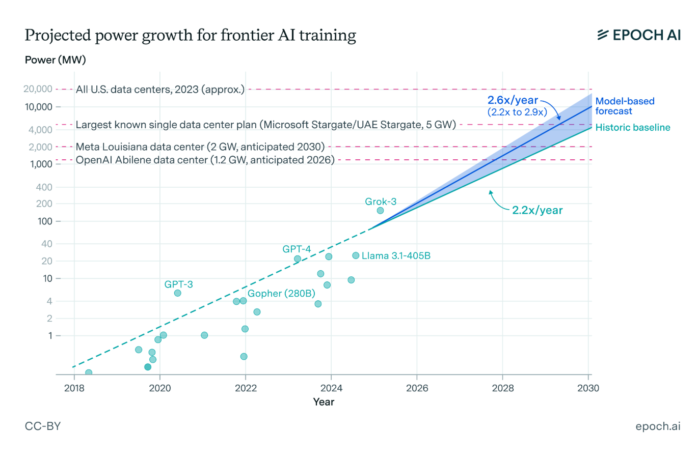
Planning question for this room: if one training run needs 5 GW in 2030 — who on Earth will be able to host it?
The UAE rung · Why here
Why here: cheap, clean, abundant electricity.
Industrial electricity, US cents per kWh — Abu Dhabi transmission-connected tariff vs published industrial rates
Abu Dhabi
6.3¢
United States
8.7¢
Germany
13.8¢
Japan
16.9¢
United Kingdom
22.0¢
1.32¢Al Dhafra’s 2 GW solar PPA — a world record that still stands. Plus 5.6 GW of Barakah nuclear, about a quarter of national electricity.
EWEC · ENEC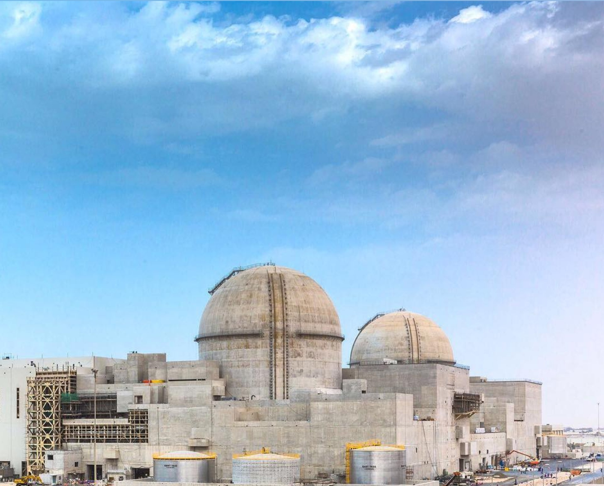
Be precise, and the claim gets stronger: the Abu Dhabi transmission-connected tariff — what a campus actually pays. Dubai's retail rate is ~12¢, above the US. Real, emirate-specific, backed by new nuclear and record-cheap solar.
The UAE rung · The chip story
Four years, four acts: from licences to trust.
Caught in the net
US restricts top chips to China; 2023: licences quietly extend to the UAE.
The Diffusion Rule
A three-tier world; UAE in Tier 2 with hard GPU caps.
The Abu Dhabi deals
Rescinded two days before effect. US–UAE Partnership signed; Stargate UAE announced; up to 500,000 chips/yr.
First shipments
Microsoft's 21,500 A100-equivalents (first licence ever granted); ~35,000 Blackwell GB300s approved for G42.
Licence-free
UAE moved to Country Group A:5 — best chips ship licence-free, under an agreed security framework.
In plain terms: 2023: every chip needed US permission. Since July: none do — in exchange for US security standards. Trust is engineered contractually.
The chip constraint just lifted. What remains scarce for everyone: power, memory, environments, people.
The UAE rung · The files
Sovereignty does not require the top rung.
K2 Think — made on this campus
MBZUAI's 32B reasoning model matched models ~20× its size. V2 (2026): "100% sovereign" — data, training, weights all in-house.
Falcon — the efficiency pivot
TII went from a 180B giant to small models that top the Arabic leaderboard and run on laptops.
Jais 2 — the language asset
The leading open Arabic model (70B), by G42 with MBZUAI. Language coverage is measurable sovereignty.
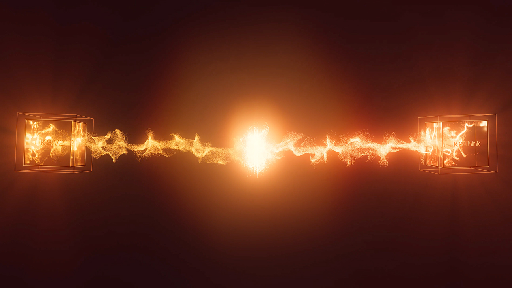
In plain terms: The falling curve is a sovereignty gift: yesterday's frontier fits on rungs a mid-size nation owns. The UAE holds compute (Stargate), models (K2, Falcon, Jais), data — and equity via MGX.
What this means for you · Sovereignty
Sovereignty is a spectrum, not a switch.
Where does your data sit — and who can read it in flight?
dial: your country → your building → your diskDo the weights run on vendor servers or machines you control?
dial: vendor API → hosted for you → your racksWho patches the machines and gets paged at 3am?
dial: vendor-run → co-managed → self-runWho can switch you off — a licence change, an export control, a decision taken elsewhere?
dial: read the licence, not the launch blogIf the vendor vanished tomorrow, what still works on Monday?
dial: nothing → degraded → unchangedWhat can you inspect and show a regulator?
dial: trust the vendor → verify yourselfIn plain terms: Sovereignty is six separate questions, not one yes-or-no switch — and you can answer each one differently.
The UAE AI Strategy 2031 and the National Cloud Security Policy set the frame — these six dials are what you decide.
Decisions · The market today
The whole model market, on one chart.
Intelligence vs price
Every dot is a buyable model: intelligence vs cost per task. The Pareto line shifts toward the green quadrant every quarter.
Most workloads don't need the corner
The corner costs 10–50× the middle. For summaries and letters, mid-chart models are indistinguishable — some open-weight.
The procurement habit
Benchmark YOUR task against three dots, not the leaderboard's one.
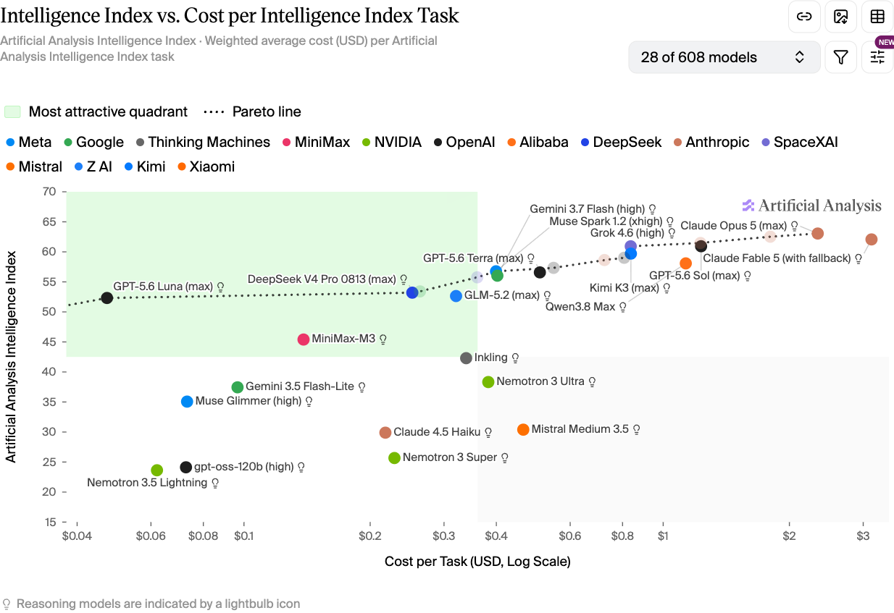
Intelligence is now a catalogue with a price column. Buying the most expensive row by default is the most common AI budgeting mistake.
Decisions · Competition
Six months of market share, 2026.
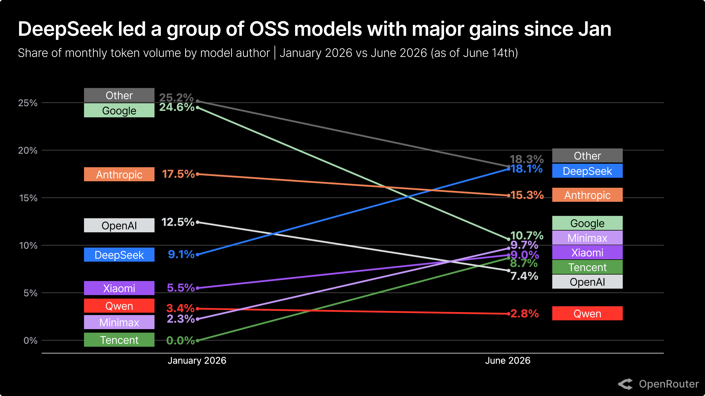
DeepSeek 9.1% → 18.1% while Google fell 24.6% → 10.7%. Karp's "winners and losers swap places every six months", in measured traffic.
Decisions · What organisations actually spend
The adoption gap: $12 versus $7,500.
Measured spend, not survey talk
Ramp's real card data, per employee per month on AI: the median company spends $12. The top 10% spend $660. The top 1% spend $7,500 — 625× the median.
All three curves bend upward
The gap widens faster than any curve rises. a16z: "Not sure we've ever seen an adoption gap quite like this."
What the leaders are buying
$7,500/employee is not chat licences — it is coding agents, API capacity and GPU cloud.
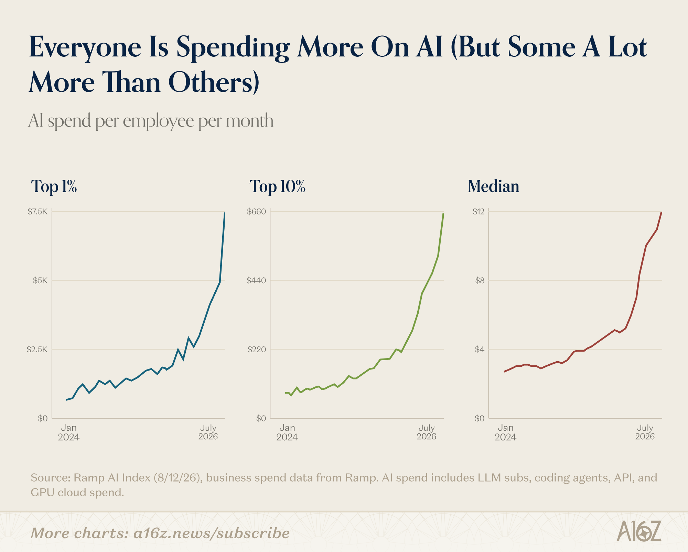
The question for this room: where is your organisation on this chart — and is $12 a month a considered hedge, or a decision not to compete that nobody has actually taken?
What this means for you · Build or buy
Almost nobody should pretrain.
Pretraining means building a model from scratch. Inference means running a finished model to answer one question. For almost every organisation the first is out of reach, and the second is where your decisions and your recurring bill actually sit. Five options, most effort first.
Pretrain from scratch
Frontier labs only.
Llama 3 405B: 15.6T tokens, 16,384 H100s. DeepSeek-V3's final run: $5.576M — excluding all prior research.
Keep pretraining on your own text
A few large institutions.
Keep training an open model on your own corpus. Cheaper — but still a cluster and a training team.
Fine-tune or distil a small open model
Most organisations that truly need their own model.
Qwen3-8B: RL cost 17,920 GPU-hours; distillation cost 1,800 — a tenth — and scored higher.
Retrieval and prompting
No training at all. Most public-sector work.
The model reads your documents at question time instead of memorising them. Repeated context caches cheaply: $2.00 fresh vs $0.25 cached (Qwen3.8-Max).
Just call an API
Everything you are still testing.
Kimi K3: $3 in / $15 out per M tokens; Qwen3.8-Max: $2 / $6. Pay per question, not per cluster.
The size that actually gets deployed is the small one: in about ten days, Qwen3.8-27B drew 415.0K Hugging Face downloads against 9.5K for the 2.4T flagship.
In plain terms: Building a model from scratch is a frontier-lab job. Almost everyone else should adapt one, or simply rent it.
For almost every organisation in this room, the honest answer is rung 3, 4 or 5.
What this means for you · Capacity planning
Inference capacity is sized by latency, not by users.
Why user counts mislead
Two services with identical traffic can differ 10× in GPUs. What sets the bill is context length, output length and how tight your latency promise is.
The queue is the product
Every hyperscaler is sold out: AWS reports a $244B backlog, Oracle $523B, Microsoft $80B of Azure orders it cannot fill. Capacity is booked years ahead.
The procurement question is not "how many users?" It is: how long are the conversations, how fast must the first word appear, and what happens at peak. Ask a vendor to size on your traffic and your latency target — anyone quoting per-seat is guessing.
What this means for you · The shopping list
What to buy, in what order.
Serving, adapting or training? Say which one first — they want different machines.
which of the three workloads is this?Memory is provisioned by TOTAL parameters. Compute is billed by the ACTIVE ones.
Kimi K3: 2.78T total, 104.2B activeRequest sizes span three orders of magnitude. Planning on the average quietly breaks.
K3 traffic: under 2K to 1M tokensCache hits move the input half of the bill only. Output costs the same either way.
Kimi K3: $0.30 cached vs $3.00 fresh inputBuy electricity, cooling and fabric on a multi-year horizon — ahead of more GPUs.
Colossus: the fabric set the ceilingGive monitoring its own budget line. You can buy that capacity per request.
Barak: pay the safety tax on demandIn plain terms: Decide what job the machine must do, measure your own traffic, then buy power and network before more chips.
The one question for any vendor: price this on my traffic mix and my cache-hit rate, not on your average request.
The decision test
Architecture writes the infrastructure bill.
Same question as the opening: was the market right to panic? Hands up. Cheaper intelligence did not mean less infrastructure — it meant more of everything.
01Which of the five workloads are you buying for?
02What must fit: total, active, or live state?
03Where does the architecture send its costs?
04Frontier teacher — or its distilled student?
05Capacity for duration, fan-out and safety compute?